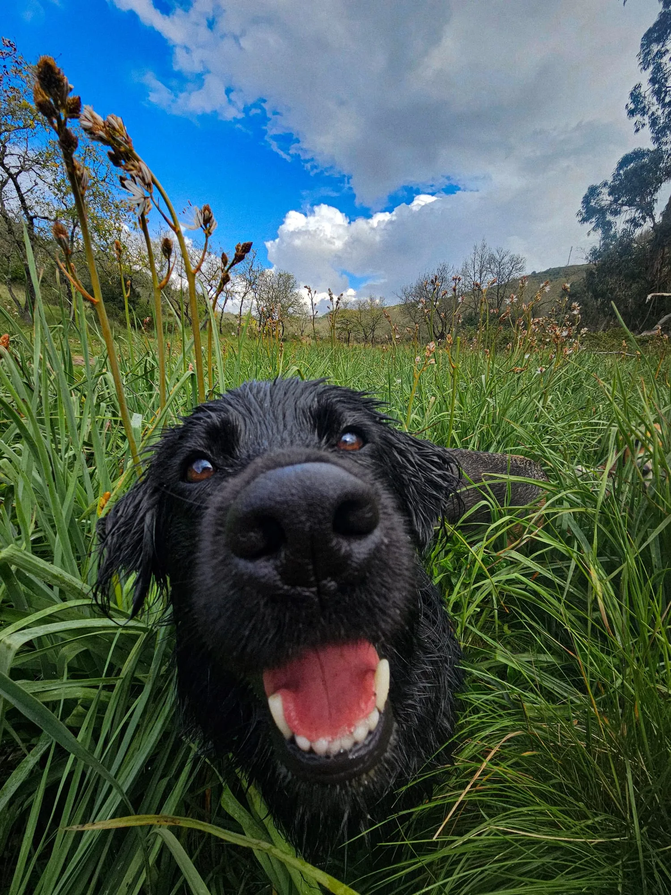
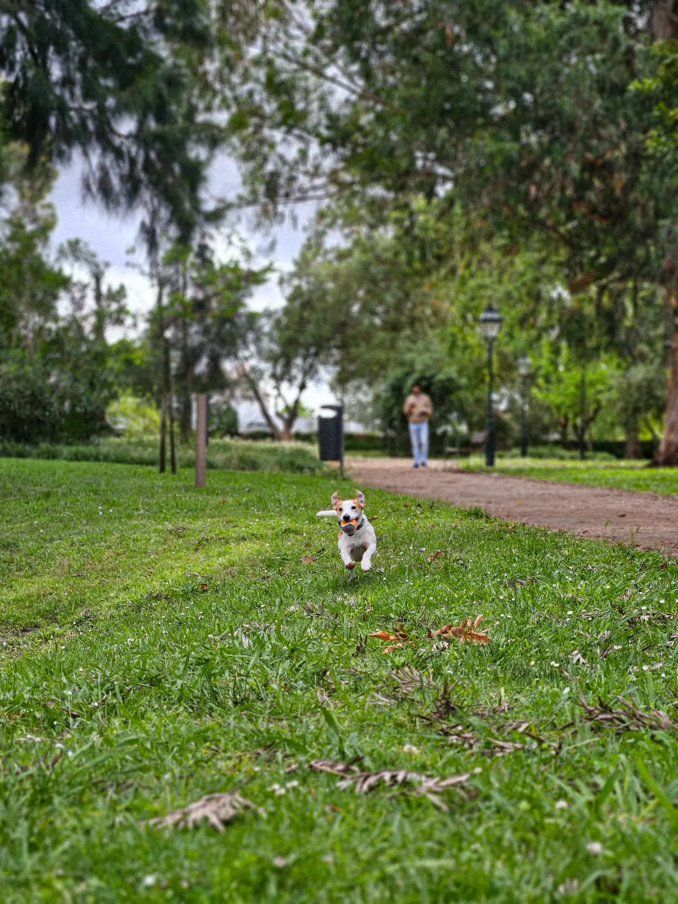
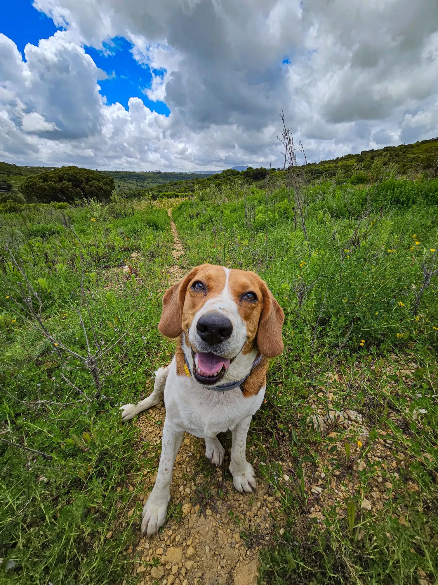
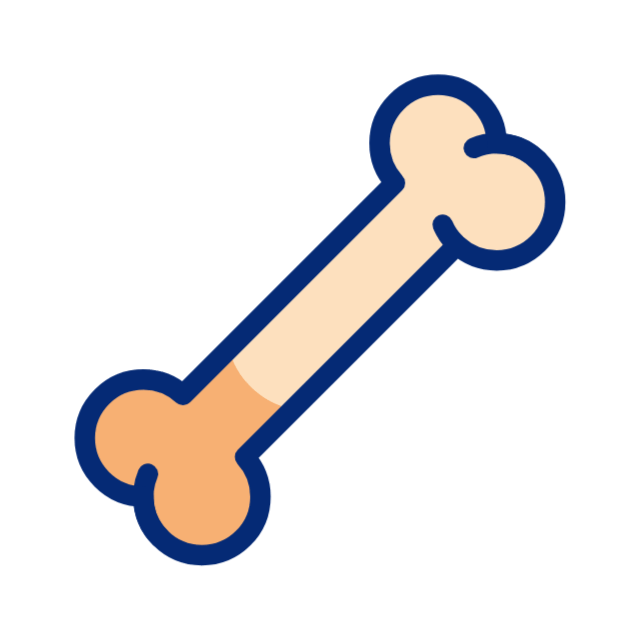

Passeios Individuais
Atenção total ao teu cão, num passeio ao ritmo dele: tranquilo, seguro e personalizado.

Ideal para

- Sair da rotina
- Satisfazer necessidades quando não tens disponibilidade
- Cães tímidos ou pouco sociáveis
- Cães séniors ou com limitações
- Cães em fase de treino ou reabilitação
Como funciona

Cada passeio é personalizado mediante as necessidades do cão: perto da área de residência ou na natureza.
- Levar coleira ou arnês com identificação, trela* e biscoitos**
- Disponibilizar chaves de casa (opcional)
* Não aceitamos trelas extensíveis.
** Avisar antecipadamente caso o cão apresente alguma intolerância alimentar.


Horários

Segunda a Sexta: 7h30-18.30h;
Encerra aos fins de semana e feriados.